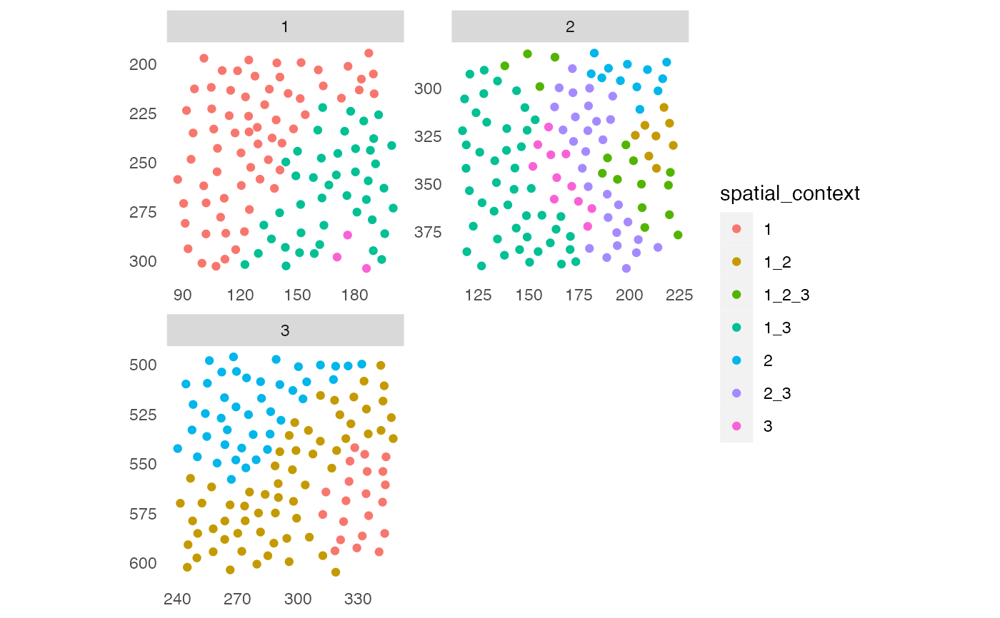
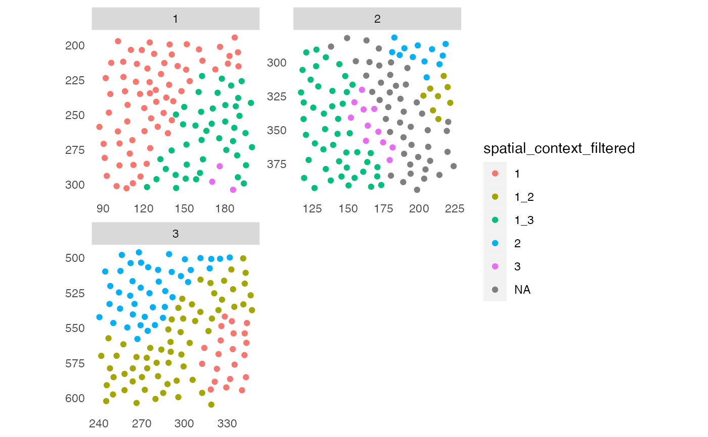
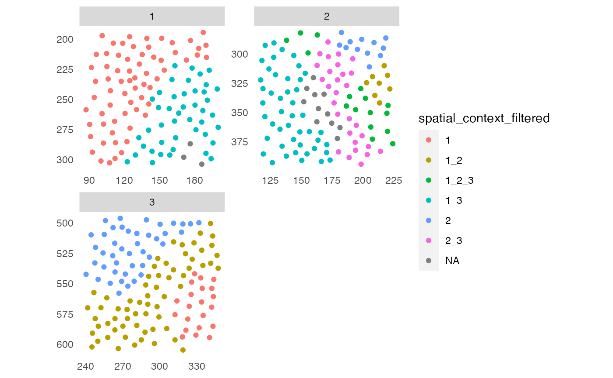
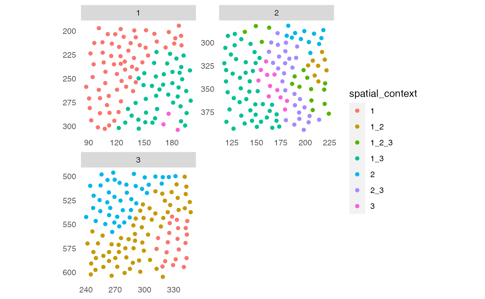
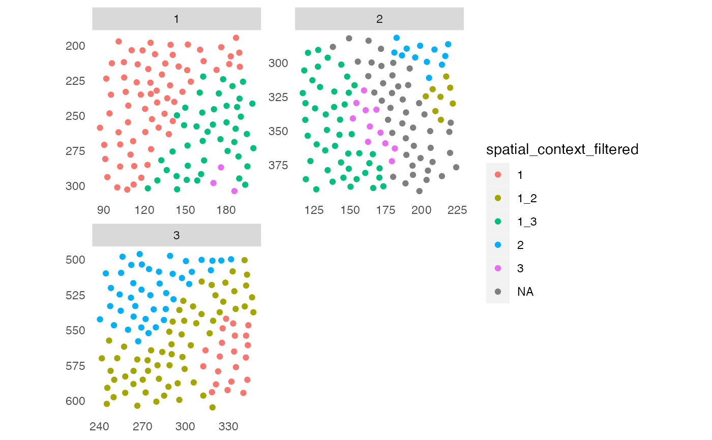
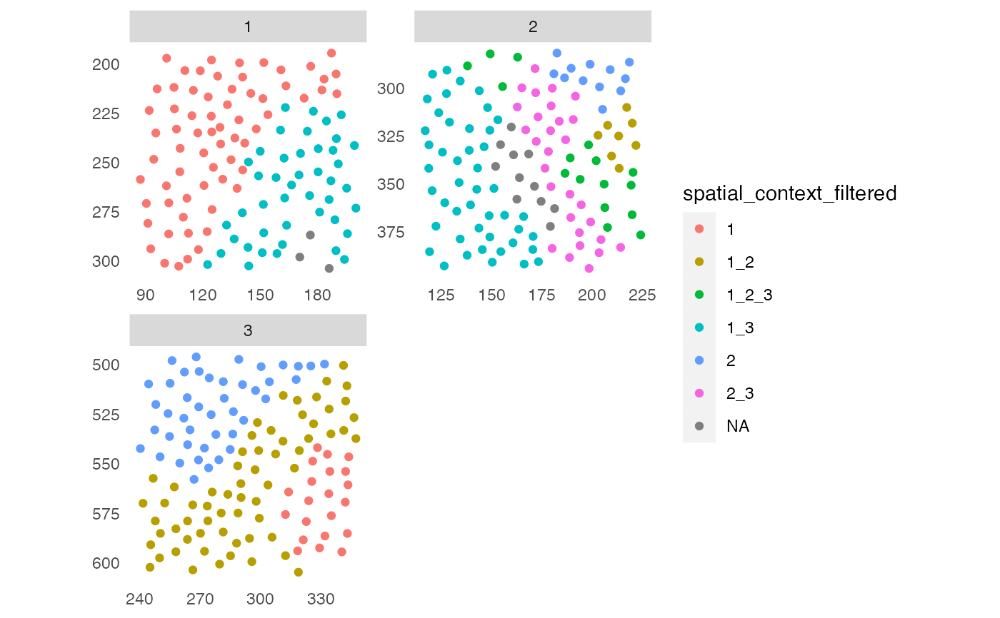

Function to filter detected spatial contexts (SCs) based on a user-defined threshold for number of group entries and/or cells.
filterSpatialContext(
object,
entry = "spatial_context",
group_by = "sample_id",
group_threshold = NULL,
cells_threshold = NULL,
name = "spatial_context_filtered"
)Arguments
- object
a
SingleCellExperimentorSpatialExperimentobject- entry
a single character specifying the
colData(object)entry containing thedetectSpatialContextoutput. Defaults to "spatial_context".- group_by
a single character indicating the
colData(object)entry by which SCs are grouped. This is usually the image or patient ID. Defaults to "sample_id".- group_threshold
a single numeric specifying the minimum number of group entries in which a SC is detected.
- cells_threshold
a single numeric specifying the minimum total number of cells in a SC.
- name
a single character specifying the name of the output saved in
colData(object). Defaults to "spatial_context_filtered".
Value
returns an object of class(object) containing a new column
entry to colData(object)[[name]] and a new data.frame entry to
metadata(object)[["filterSpatialContext"]] containing the group and
cell counts per SC.
See also
detectSpatialContext for the function to detect
spatial contexts
plotSpatialContext for the function to plot
spatial context graphs
Examples
set.seed(22)
library(cytomapper)
data(pancreasSCE)
## 1. Cellular neighborhood (CN)
sce <- buildSpatialGraph(pancreasSCE, img_id = "ImageNb",
type = "knn",
name = "knn_cn_graph",
k = 5)
sce <- aggregateNeighbors(sce, colPairName = "knn_cn_graph",
aggregate_by = "metadata",
count_by = "CellType",
name = "aggregatedCellTypes")
cur_cluster <- kmeans(sce$aggregatedCellTypes, centers = 3)
sce$cellular_neighborhood <- factor(cur_cluster$cluster)
plotSpatial(sce, img_id = "ImageNb",
colPairName = "knn_cn_graph",
node_color_by = "cellular_neighborhood",
scales = "free")
 ## 2. Spatial context (SC)
sce <- buildSpatialGraph(sce, img_id = "ImageNb",
type = "knn",
name = "knn_sc_graph",
k = 15)
sce <- aggregateNeighbors(sce, colPairName = "knn_sc_graph",
aggregate_by = "metadata",
count_by = "cellular_neighborhood",
name = "aggregatedNeighborhood")
# Detect spatial context
sce <- detectSpatialContext(sce, entry = "aggregatedNeighborhood",
threshold = 0.9)
plotSpatial(sce, img_id = "ImageNb",
colPairName = "knn_sc_graph",
node_color_by = "spatial_context",
scales = "free")

# Filter spatial context
# By group
sce <- filterSpatialContext(sce, group_by = "ImageNb",
group_threshold = 2)
plotSpatial(sce, img_id = "ImageNb",
colPairName = "knn_sc_graph",
node_color_by = "spatial_context_filtered",
scales = "free")

# By cells
sce <- filterSpatialContext(sce, group_by = "ImageNb",
cells_threshold = 15)
plotSpatial(sce, img_id = "ImageNb",
colPairName = "knn_sc_graph",
node_color_by = "spatial_context_filtered",
scales = "free")

## 2. Spatial context (SC)
sce <- buildSpatialGraph(sce, img_id = "ImageNb",
type = "knn",
name = "knn_sc_graph",
k = 15)
sce <- aggregateNeighbors(sce, colPairName = "knn_sc_graph",
aggregate_by = "metadata",
count_by = "cellular_neighborhood",
name = "aggregatedNeighborhood")
# Detect spatial context
sce <- detectSpatialContext(sce, entry = "aggregatedNeighborhood",
threshold = 0.9)
plotSpatial(sce, img_id = "ImageNb",
colPairName = "knn_sc_graph",
node_color_by = "spatial_context",
scales = "free")

# Filter spatial context
# By group
sce <- filterSpatialContext(sce, group_by = "ImageNb",
group_threshold = 2)
plotSpatial(sce, img_id = "ImageNb",
colPairName = "knn_sc_graph",
node_color_by = "spatial_context_filtered",
scales = "free")

# By cells
sce <- filterSpatialContext(sce, group_by = "ImageNb",
cells_threshold = 15)
plotSpatial(sce, img_id = "ImageNb",
colPairName = "knn_sc_graph",
node_color_by = "spatial_context_filtered",
scales = "free")
